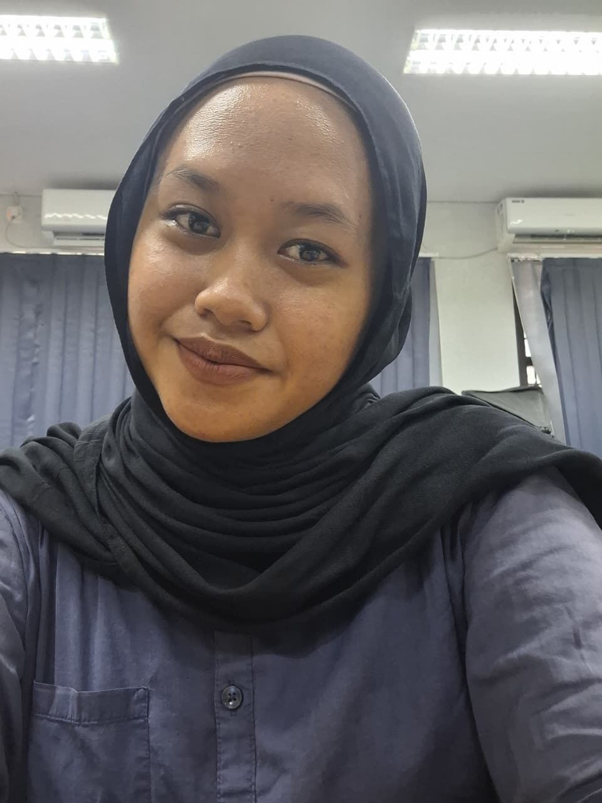

Selama perkuliahan, saya telah mengerjakan berbagai proyek, seperti UI/UX Design, Internet of Things (IoT), Animasi 3D, dan Front-End Website. Portofolio ini berisi kumpulan proyek yang telah saya kerjakan sebagai bentuk pengalaman, pembelajaran, dan perkembangan kemampuan saya.

Alat utama dalam alur kerja kreatif saya.
UI/UX Design, Prototyping, & Design Systems.
3D Modeling, Animation, & Rendering.
Web Development, HTML/CSS, JS, & Frameworks.